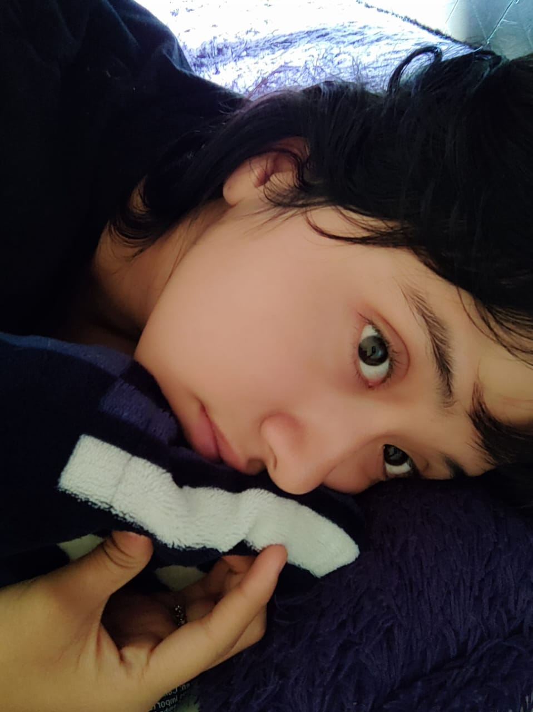

Soy una estudiante del Instituto Tecnológico Superior del Occidente del Estado de Hidalgo, cursando el primer semestre de la carrera de Tecnologías de la Información y Comunicaciones (TICs). Estoy emocionada por explorar áreas más especializadas, como inteligencia artificial, desarrollo de aplicaciones móviles y análisis de datos. Me siento afortunada de formar parte de una comunidad académica que fomenta el aprendizaje colaborativo y el crecimiento personal. Estoy comprometida con mi educación y ansiosa por seguir aprendiendo y creciendo en el apasionante mundo de las TICs.
La verdad es que empecé con la idea de solo querer ver qué onda, o más bien explorar qué tal. Pero después me empezó a gustar la idea de poder descubrir que puedo hacer muchas cosas con la simple programación. Ahorita estoy haciendo una página web y me emociona mucho saber que aprendí a hacer cosas como circuitos eléctricos, utilizar GitHub, codificar. Pero sobre todo, amo ver cómo las cosas que hago desde una computadora se reflejan en algo hermoso digitalmente hablando.
Provengo del Centro de Bachillerato Tecnológico Industrial y de Servicios No. 83, donde estudié programación. El centro se encuentra en Actopan, Hidalgo. Actualmente, resido en la comunidad de Dajiedhit, perteneciente al mismo municipio. Es un lugar tranquilo que me permite concentrarme en mis estudios y proyectos de programación. Estoy emocionada por seguir aprendiendo y creciendo en esta carrera que me apasiona. Estoy lista para enfrentar nuevos desafíos y alcanzar el éxito en el apasionante mundo tecnológico.